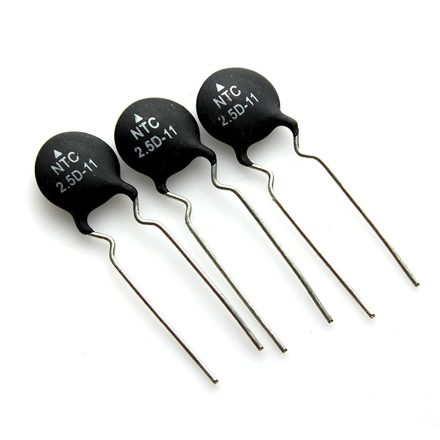
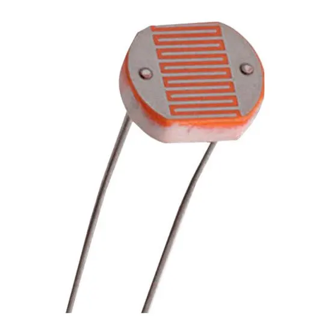
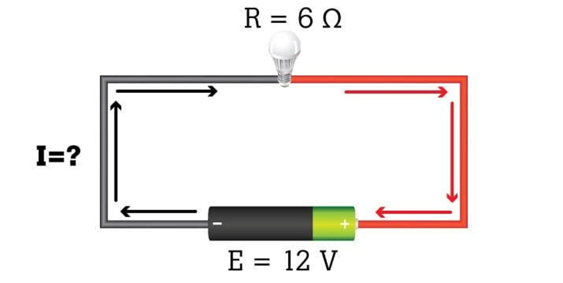
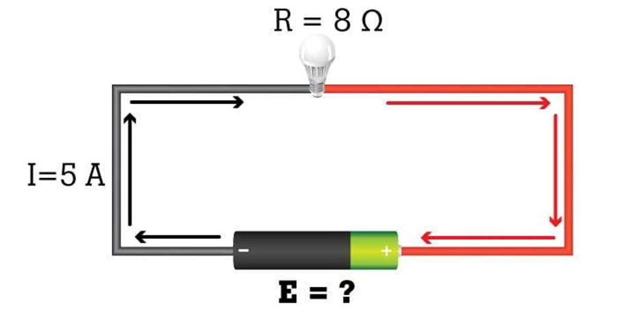

Circuitos Eléctricos
Peregrina Chavarría José Elías - Briseño Rodríguez Ivana Naomi

Tipos de resistores
Tipos de resistores por composicion
Resistores de composición de carbono
Los resistores de composición de carbono son resistores que están hechos de carbono finamente dividido o grafito mezclado con un material aislante en polvo como aglutinante en las proporciones necesarias para el valor R deseado.
Más carbono produce menos resistencia, mientras que más aglutinante equivale a mayor resistencia.
El elemento de resistencia está encerrado en una caja de plástico para aislamiento y resistencia mecánica.
Unido a los dos extremos del elemento de resistencia de carbono hay tapas de metal con cables de cobre estañado para soldar las conexiones en un circuito.
Las resistencias de composición de carbono normalmente tienen un cuerpo marrón y son cilíndricas.
Los resistores de composición de carbono están comúnmente disponibles en valores de resistencia de 1Ω a 20MΩ.
La clasificación de potencia es generalmente 0,1, 0,125, 0,25, 0,5, 1 o 2W.
Resistores de Película de Carbono

Un resistor de película de carbono es un resistor en el que se deposita una fina película de carbono sobre un sustrato aislado y luego se corta en un cuerpo en espiral.
El valor de resistencia del resistor se controla variando la proporción de carbono a aislante.
Más carbono da menos resistencia, mientras que más material aislante proporciona una mayor resistencia.
En comparación con las resistencias de composición de carbono, las resistencias de película de carbono tienen las siguientes ventajas: tolerancias más bajas y más ajustadas, menos sensibilidad a los cambios de temperatura y envejecimiento, y menos ruido generado internamente.
Resistores de Película de Metal

Una resistencia de película metálica es un resistor en el que se rocía una fina película de metal sobre un sustrato cerámico y luego se corta en un cuerpo en espiral.
La longitud, el grosor y el ancho de la espiral de metal determinan el valor de resistencia exacto.
Las resistencias de película metálica ofrecen valores de resistencia más precisos que el otro tipo de resistencias de película, que son las resistencias de película de carbono. Al igual que las resistencias de película de carbono, las resistencias de película metálica se ven afectadas muy poco por los cambios de temperatura y el envejecimiento. También generan muy poco ruido internamente.
Entre los tres tipos de resistencias basadas en la composición —resistencias de composición de carbono, resistencias de película de carbono y resistencias de película metálica—, en general, las resistencias de película metálica son las mejores, luego las de película de carbono y, por último, las de composición de carbono.
Tipos de Resistores Por Función
Resistores Bobinados de Potencia
Los resistores bobinados de potencia son resistores que pueden manejar una gran cantidad de potencia, generalmente hasta 50 vatios.
Las resistores típicos normalmente pueden manejar entre 0,25W y 2W de potencia. Las resistencias bobinadas de potencia pueden manejar mucho, mucho más y son adecuadas para su uso en aplicaciones de alta potencia.
Resistores de Precisión
Los resistores de precisión son resistores que tienen valores de tolerancia muy bajos, por lo que son muy precisas (muy cerca de su valor nominal).
Todos los resistores vienen con un valor de tolerancia, que se da como un porcentaje. El valor de tolerancia nos dice qué tan cerca del valor nominal puede variar una resistencia. Por ejemplo, una resistencia de 500Ω que tenga un valor de tolerancia del 10%, puede tener una resistencia que esté entre el 10% por encima de 500Ω (550Ω) o el 10% por debajo de 500Ω (450Ω). Si el mismo resistor tiene una tolerancia del 1%, su resistencia solo variará en un 1%. Por lo tanto, un resistor de 500Ω puede variar entre 495Ω y 505Ω. Esta es la tolerancia como un ejemplo.
Un resistor de precisión es un resistor que tiene un nivel de tolerancia tan bajo como 0,005%. Esto significa que una resistencia de precisión solo variará 0,005% de su valor nominal.
Las resistencias de precisión tienen valores de porcentaje de tolerancia muy bajos, haciéndolos ultraprecisos a sus valores nominales. Van a variar muy poco de sus valores nominales, por lo que se utilizan en aplicaciones en las que es necesaria una alta precisión en términos de valores de resistencia.
Resistor Fusible
Un resistor fusible es un resistor enrollado que está diseñado para quemarse fácilmente cuando se supera la capacidad de la resistencia.
De esta manera, un resistor fusible cumple funciones duales. Cuando no se excede la potencia, sirve como resistencia que limita la corriente. Cuando se excede la clasificación de potencia, funciona como un fusible, quema y se convierte en un circuito abierto para proteger los componentes en el circuito del exceso de corriente.
Resistor de Cemento
Los resistores de cemento son resistores de potencia que son resistentes al calor y al fuego.
Los resistores de cemento están hechos para manejar una gran cantidad de energía que fluye a través de él sin que se dañe por el calor o las llamas. Si está diseñando un circuito donde se pasa mucha corriente a través de una resistencia y con la necesidad de que sea resistente a altas temperaturas y llamas, las resistencias de cemento son una buena opción de diseño.
Las clasificaciones de potencia típicas varían de 1W a 20W o más.
Las tolerancias del valor de resistencia establecido son alrededor del 5%.
Potenciómetros
Un potenciómetro es un resistor variable de 3 terminales. Al ajustar el terminal del limpiador, se puede usar para representar una amplia gama de resistencias en un circuito desde cualquier punto cercano a 0Ω hasta la clasificación de resistencia especificada del potenciómetro. Por lo tanto, por ejemplo, un potenciómetro de 10KΩ se puede ajustar para dar un rango de resistencia de casi 0Ω a 10KΩ ajustando la perilla del potenciómetro.
Los potenciómetros se usan ampliamente en circuitos para una variedad de usos, pero su función principal sigue siendo la misma: aumentar o disminuir la amplitud de una señal en un circuito. Cuando la resistencia del potenciómetro disminuye, la amplitud de la señal aumenta. Cuando se aumenta la resistencia, la amplitud de la señal disminuye. Esto se puede usar en circuitos para controlar los niveles de volumen, como en los altavoces o para cualquier control ajustable. Símbolo:

Reóstatos
Un reóstato es un resistor variable de 2 terminales.
Como resistor variable, sirve para variar la cantidad de voltaje o corriente en un circuito.
Al igual que los potenciómetros, los reóstatos se pueden usar para variar las señales de CA o CC. Se diferencian de los potenciómetros en el hecho de que solo tienen dos cables cuyos potenciómetros tienen 3. Sin embargo, los dos aún logran la misma función. Mientras que un potenciómetro usa un tercer terminal para servir como la parte ajustable, el reóstato usa un control deslizante para variar la resistencia. Si el control deslizante no se mueve, el reóstato funciona como una resistencia fija.
Un reóstato se conecta en un circuito al tener los dos cables conectados en serie con la carga.
Termistores
Un termistor es un resistor térmicamente sensible cuyo valor de resistencia cambia con los cambios en la temperatura de funcionamiento.
Debido al efecto de autocalentamiento de la corriente en un termistor, el dispositivo cambia la resistencia con cambios en la corriente.
Los termistores presentan un coeficiente de temperatura positivo (PTC) o un coeficiente de temperatura negativo (NTC). Si un termistor tiene un coeficiente de temperatura positivo, su resistencia aumenta a medida que aumenta la temperatura de funcionamiento. Por el contrario, si un termistor tiene un coeficiente de temperatura negativo, su resistencia disminuye a medida que aumenta la temperatura de funcionamiento.
La magnitud de la resistencia cambia con los cambios en la temperatura de operación depende del tamaño y la construcción del termistor. Siempre es mejor verificar la hoja de datos del termistor en uso para conocer todas las especificaciones de los termistores.
Los termistores se utilizan con frecuencia en circuitos electrónicos que manejan la medición de temperatura, el control de temperatura y la compensación de temperatura.

Fotorresistores
Los fotorresistores son resistores cuyos valores de resistencia cambian según la luz que incide en la superficie de la resistencia. En un entorno oscuro, la resistencia de un fotorresistor es muy alta, posiblemente varios MΩ, dependiendo de la clasificación de resistencia del fotorresistor específico en uso. Cuando la luz intensa golpea la superficie, la resistencia del fotorresistor cae dramáticamente, posiblemente hasta 400Ω.
Por lo tanto, los fotorresistores son resistencias variables cuyos valores de resistencia cambian con respecto a la cantidad de luz que incide en su superficie.

l simboliza la longitud del conductor, A es el área de su sección transversal y ρ (rho) es la resistividad del material conductor.
Las propiedades eléctricas de los materiales y sustancias —es decir, las características de los conductores y elementos conductores— también dependen de la temperatura.
Los valores de resistividad y resistencia generalmente se dan bajo la condición de que se relacionen con un valor de temperatura específico, y la mayoría de las veces este valor corresponde a la temperatura ambiente.
Si l se define en metros [m] y A en metros cuadrados [m²], la unidad de ρ es ohm·metro (Ω·m).
Ley de Ohm
La ley de Ohm se utiliza para determinar la relación entre el **voltaje** (también llamado tensión), la **corriente** y la **resistencia** en un circuito eléctrico. Para los estudiantes de electrónica, esta ley (E= I × R) es tan fundamental como la ecuación de la relatividad de Einstein para la física.
La fórmula básica es:
Donde E es el voltaje o tensión (en voltios), I es la corriente (en amperios) y R es la resistencia (en ohmios). De manera explícita, esto significa que el voltaje es igual a la corriente multiplicada por la resistencia.
Si conoces dos de estos valores, puedes reorganizar la fórmula para encontrar el tercero. Solo es necesario cambiar la pirámide de la siguiente forma:

Variables y unidades:
• Voltaje o tensión (E, Voltio [V]) – es la “presión” que impulsa a los electrones a desplazarse.
• Corriente (I, Amperio [A]) – representa el caudal de electrones que fluye.
• Resistencia (R, Ohmio [Ω]) – es el obstáculo que restringe el flujo.
Ejemplos de cada fórmula
Si se conocen el voltaje y la corriente, se obtiene la resistencia despejando $R = E / I$. Si se conocen el voltaje y la resistencia, la corriente se calcula como $I = E / R$. Por último, si se conocen la corriente y la resistencia, el voltaje es $E = I \times R$.
Ejemplos prácticos:
Ejemplo 1: Cálculo de corriente

Supongamos un circuito con una batería de **12 V** y una resistencia de **6 Ω**. La corriente será:
Ejemplo 2: Cálculo de resistencia.

Si se tienen **24 V** aplicados a una lámpara que consume **6 A**, la resistencia es:
Ejemplo 3: Cálculo de voltaje.

Con una resistencia de **8 Ω** y una corriente de **5 A**, el voltaje será:
Código de colores
Resistencia eléctrica, disipación máxima y precisión o tolerancia, estos son los valores óhmicos de los resistores, los cuales se suelen representar por medio de unos anillos de color pintados en el cuerpo de los mismos, dichos anillos llevan por nombre **“Código de colores”**. Suelen ser tres, cuatro o cinco anillos, el anillo de tolerancia normalmente es plateado o dorado y se encuentra de lado derecho. Estos anillos de colores de leen de izquierda a derecha y su significado es el siguiente:
1er. anillo : 1ª cifra
2º.anillo : 2ª cifra
3er. anillo : Número de ceros que siguen a los anteriores.
4º.anillo : Tolerancia